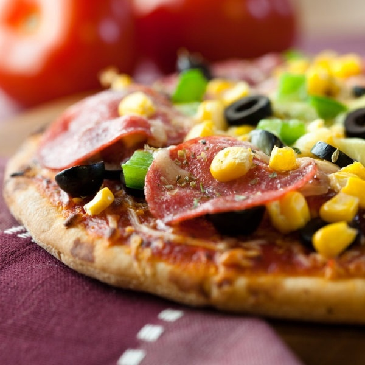
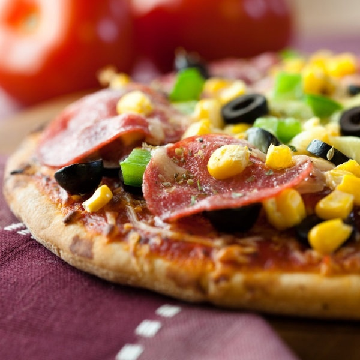

Pizza toppings are also packed with a compound called glutamate, which can be found in the tomatoes, cheese, pepperoni and sausage. When glutamate hits our tongues, it tells our brains to get excited — and to crave more of it. This compound actually causes our mouths to water in anticipation of the next bite. Then there are the combinations of ingredients. Cheese and tomato sauce are like a perfect pairing. On their own, they taste pretty good. But according to culinary scientists, they contain flavor compounds that taste even better when eaten together. Another quality of pizza that makes it so delicious: Its ingredients become brown while cooking in the oven. Foods turn brown and crispy when we cook them because of two chemical reactions The first is called caramelization, which happens when the sugars in a food become brown. Most foods contain at least some sugar; once foods are between 230 degrees and 320 degrees, their sugars begin to turn brown. Caramel is made from several thousand compounds, making it one of the most complex food products. On a pizza, ingredients such as onions and tomatoes become caramelized during baking, making them rich, sweet and flavorful. That brown and crispy crust is also the result of the dough caramelizing.
While the meat and cheese on your pizza also get brown, this is due to a different process called the “Maillard reaction,” which is named after French chemist Louis-Camille Maillard The Maillard reaction occurs when the amino acids in high-protein foods such as cheese and pepperoni react with the sugars in those foods when heated. Pepperoni that becomes crispy with curled edges, and cheese that browns and bubbles, are examples of the Maillard reaction. With bread, cheese and tomato sauce as its base, pizza might seem like a simple food. It isn’t. And the next time you’re about to devour a slice, you’ll be able to appreciate all of the elements of pizza that excite our brains, thrill our taste buds and cause our mouths to water. Miller is an associate professor of hospitality management at Colorado State University. This article was originally published on theconversation.com.
1.FRANCO'S PIZZERIA & TRATTORIA:Franco Forleo has been serving traditional homemade dishes for many years. His culinary roots take him back to his student years, working in a local pizzeria in lower Rosebank then known as, 'La Pizzeria'. Working as a dinning room assistant he took the opportunity of learning the art of flipping pizza's whenever he could. After completing his schooling in 1972, he did his one year compulsory military training, starting at the Valhalla Air Force Base in Pretoria.
After basic training, the remaining nine months was spent at the SA Air Force College, serving 'top brass' functions. His culinary career continued when he joined La Pizza Restaurant in the then trendy CBD of Johannesburg. As a part-time worker, he subsidised a meagre banker's salary. When he was asked to join 'La Pizza' full time he jumped at the opportunity of manning the busy pizza oven. Years later, Franco was given the opportunity of taking over this establishment.
Throwing caution to the wind and plunging himself deep into debt,he took on this challenge. In 1987, Franco sold 'La Pizza' and after a few months of rest, found an insolvent, rundown restaurant in Parkview. This establishment was notorious for never having been successful, and Franco was frowned upon by locals as being just another who would come and go. A pizza oven was built and Franco began trading at the beginning of December of that year and has never looked back. With the help of his nephew Massimo and his now grown up sons, Franco jnr. and Ricky, Franco continues to serve and please, having become affectionately known as 'the dining room of Parkview'.
2.PAPINOS RESTAURANT:Family run Italian Restaurant, Papino's Restaurant , situated in the heart of Hout Bay, is all about good, traditional Italian dishes with a contemporary twist. The ochre walls, reminiscent of a Tuscan landscape, and romantic, almost sultry atmosphere with Karen and Richard’s special personal attention to detail, make this restaurant a favourite with both locals and tourists.
"Papino’s is almost 33 years in Hout Bay - a true stalwart amoung local Restaurants, so many memories ... and Karen and Richard as custodians of the legacy, celebrated their 3RD YEAR ANNIVERSARY in May 2018".
The ritual of coming together, sharing wine and food with family and friends is at the heart of this establishment, as they welcome old and new to come and join them in celebrating this simple pleasures in life. Arrive as a guest, leave as a friend :)
Favourite pizzas include the Grantling with avocado, bacon, mushrooms and garlic or the aptly named Tuscany Vegetarian Pizza with artichokes, capers, mushrooms and fresh basil pesto. For something with a more meat on the bone, try the Hollandse Biefstuk with mushrooms flambeed in brandy.
Remember to leave some space for the Cherries “Piemont”, Papino’s most popular dessert. The cherries are served in a spicy red wine sauce with ice cream.


 
